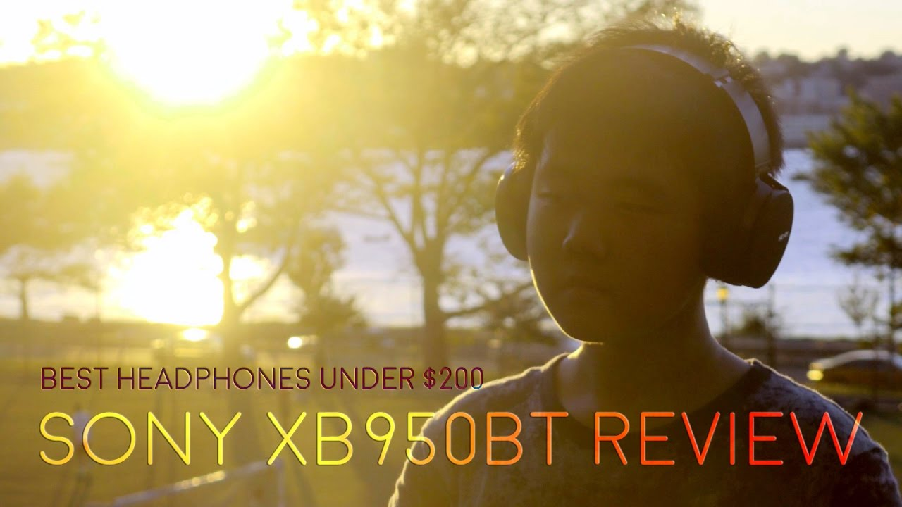
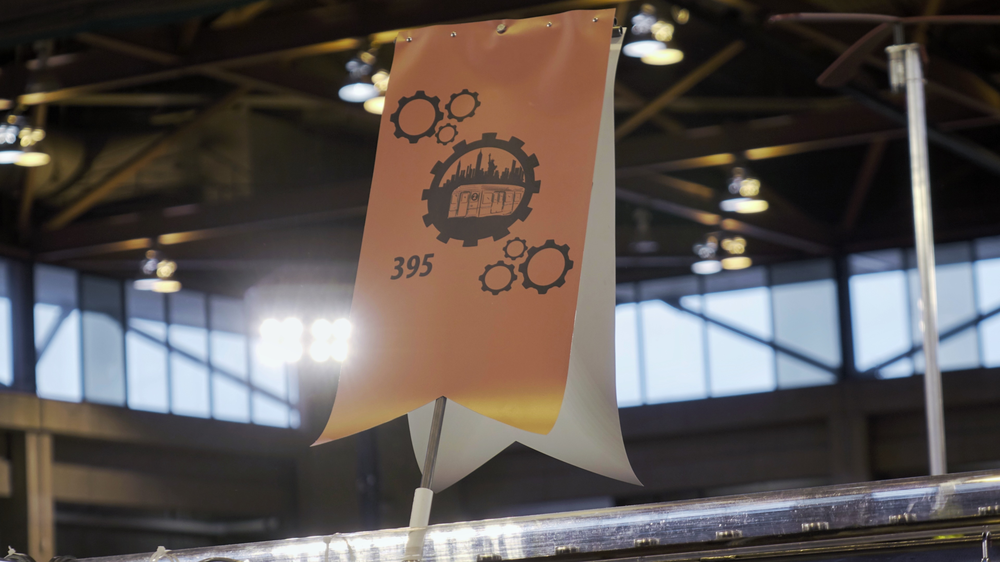
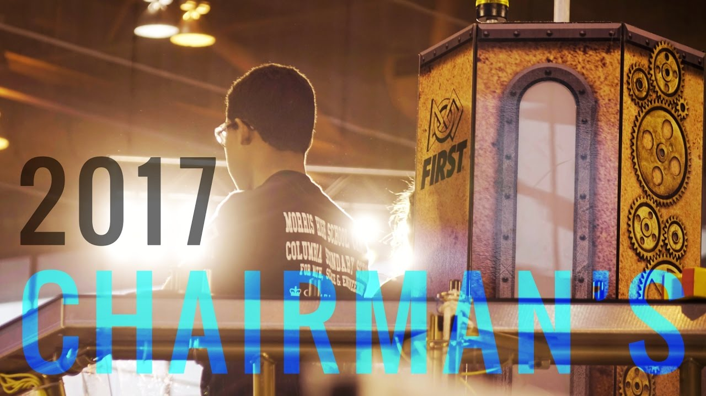

Fallen
Narrative Short Film/School Project
May 2017
May 2017
A short film for our biology class final project on genetics. This was my second narrative short film, and I experimented with story structure, lighting, coverage, sound design, and visual effects.

Sony XB950BT Review
YouTube Video/Informational Video
Oct 2016
Oct 2016
A short film for our biology class final project on genetics. This was my second narrative short film, and I experimented with story structure, lighting, coverage, sound design, and visual effects.

2 Train Season Recap
Documentary
June 2017
June 2017
A short film for our biology class final project on genetics. This was my second narrative short film, and I experimented with story structure, lighting, coverage, sound design, and visual effects.

2 Train Chairman's Video
Documentary
March 2017
March 2017
A short film for our biology class final project on genetics. This was my second narrative short film, and I experimented with story structure, lighting, coverage, sound design, and visual effects.